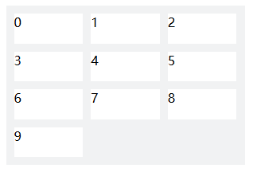

- grid-template-columns
-
grid-template-columns: px | % | fr | auto | repeat() | minmax() | max-content | min-content;
- .容器划分的单位可以是绝对的或相对的
- .fr：fraction，表示份数；容器整体被分隔成多少份，子项占的份数
- .auto：根据子项大小，自动确定列数
- .repeat(n, length length)：根据指定大小length，重复应用n次；一般只指定1个length；如果不确定使用多少列，或者想自适应，可以使用 auto-fill
或 auto-fit 由系统自动确定划分多少列
- .auto-fill：当容器大于子项时，生成空轨道；剩余空间闲置
- .auto-fit：与 auto-fill 行为一致，唯一不同的是当轨道内容为空时，将 不会生成 轨道，剩余空间被分配到各个子项中
- .minmax(length, length)：格子最小和最大尺寸
- .max-content：每一列的宽度为其中内容的最大宽度；让列尽可能宽以适应最长的内容，保证内容不会被截断
- .min-content：让列尽可能窄，仅适应最窄的内容，可能导致较多剩余空间；紧凑的列布局
-
 auto-fill
auto-fill
 auto-fit
auto-fit
- grid-template-rows
-
grid-template-rows: px | % | fr | auto | repeat() | minmax();
- grid-auto-rows、grid-auto-columns
-
grid-auto-rows: <length> | <percentage> | min-content | max-content | auto;
grid-auto-columns: <length> | <percentage> | min-content | max-content | auto;
当Grid容器中没有明确指定行高或列宽时，自动决定容器的行度或列宽 - 显式的指定行的高度|列的宽度；默认是 auto
没有明确指定行高或列宽，就是没有使用grid-template-columns和grid-template-rows划分网格
- grid-auto-flow
-
grid-auto-flow: row | column | dense | row dense | column dense;
网格项自动放置的顺序和方式 - 指定工作流的方向，默认是按行 row 的顺序填充|行优先，从上到下，然后再到下一行
dense表示密集填充还是宽松填充
特别适合处理 动态内容，如数量或大小不一 或未明确指定位置的网格项
通常是划分好格子后再指定方向；如容器划分3行3列，10个子项的排列方式

默认row排列 - 行优先

column排列 - 列优先
- grid-template
- .复合属性；同时设置列column、行rows，多见于页面整体布局，见后续案例
- grid-template-areas
- .根据指定区域划分网格
- .每个子项指定对应的区域
- .通常配合grid-template-columns和grid-template-rows指定各区域大小，便于调整宽度和合并
-
.page {
display: grid;
grid-template-columns: 250px 1fr 1fr;
grid-template-rows: 200px 60px 1fr 60px;
grid-template-areas:
'header header header'
'nav nav nav'
'aside article article'
'footer footer footer';
gap: 1rem;
}
- justify-items、align-items
- .子项在格子中的分布：上中下
- place-items
- .复合属性，同时指定justify-items和align-items
- .如果项目大小 < 划分的单元格，可以指定其位置，如水平垂直居中center
- justify-content、align-content
- .根据子项实际大小|content，在单元格内水平|垂直方向上的对齐
- .子项大小一般应小于单元格尺寸
- place-content
- .复合属性，同时指定justify-content和align-content
- gap
- .单元格间距；非常好用
- .row-gap:行间距
- .column-gap:列间距
- .容器大小包含了gap的尺寸
- 说明
- .布局元素只做布局的事情；元素内部的样式由元素完成
- .容器高度通常不显示指定，由子项撑开
- [] 两列/左右导航布局/侧边栏布局
-
.aside {
display: grid;
grid-template-columns: 8rem 1fr;
gap: 1rem;
}
配合minmax()函数动态调整侧边栏宽度
.aside {
display: grid;
grid-template-columns: minmax(150px, 25%) 1fr;
gap: 1rem;
}
- [] 三列/圣杯布局/双飞燕、浏览器市场占有率
-
.cup {
display: grid;
grid-template-columns: 8rem 1fr 4rem;
gap: 1rem;
}
- [] 等分布局
-
.grid {
display: grid;
grid-template-columns: repeat(4, 1fr);
gap: 1rem;
}
- [] 不等分布局
-
.grid {
display: grid;
grid-template-columns: 1fr 2fr 1fr;
gap: 1rem;
}
- [] 栈布局/煎饼布局；需要指定容器高度
-
.grid {
display: grid;
grid-template-rows: auto 1fr auto;
gap: 1rem;
min-height: 100vh;
}
- [] 九宫格，参考个人网站；可以不指定容器高度
-
.sudoku {
display: grid;
grid-template-columns: repeat(3, 1fr);
gap: 1rem;
}
使用flex实现
.wrap {
--num: 3;
--w: 100px;
--space: calc((100% - var(--num)* var(--w))/var(--num)/2);
display: flex;
flex-wrap: wrap;
}
.box {
width: var(--w);
height: var(--w);
background-color: #f0f;
margin: 10px var(--space);
}
- [] 手风琴 - grid
-
结构上要求：网格容器，如 wrap 有唯一子元素，如 ul，且子元素溢出隐藏；子元素可以有多个子元素，如 li
<div class="wrap">
<ul>
<li>Lorem.</li>
<li>Sapiente.</li>
<li>Placeat.</li>
<li>Rem.</li>
<li>Magnam.</li>
</ul>
</div>
.wrap {
display: grid;
grid-template-rows: 0fr;//MUST be 0fr, NOT 0
transition: .5s;
}
.wrap.active {
grid-template-rows: 1fr;
}
.wrap ul {
overflow: hidden;
}
- [] 异构布局，参考个人网站
-
grid-column: span 2;
grid-row: span 2;
grid-row: span 2;
4
grid-column: span 2;
-
.random>div:nth-child(1) {
/* grid-column: span 2; */
grid-column: 1/3;
}
.random>div:nth-child(2) {
/* grid-row: span 2; */
grid-column: 3/4;
grid-row: 1/3;
}
.random>div:nth-child(3) {
/* grid-row: span 2; */
grid-row: 2/4;
}
.random>div:nth-child(5) {
/* grid-column: span 2; */
grid-column: 2/4;
}
- .实用版
-
-
.random-adv .item:nth-child(1) {
background-size: 150% 300%;
background-position: 0 0;
}
.random-adv .item:nth-child(2) {
background-size: 300% 150%;
background-position: 100% 0;
}
.random-adv .item:nth-child(3) {
background-size: 300% 150%;
background-position: 0 100%;
}
.random-adv .item:nth-child(4) {
background-size: 300% 300%;
background-position: 50% 50%;
}
.random-adv .item:last-child {
background-size: 150% 300%;
background-position: bottom right;
}
- [] 万能自适应布局/响应式布局
-
.ale {
display: grid;
grid-template-columns: repeat(auto-fit, minmax(10rem, 1fr));
gap: 1rem;
}
- [] 全站布局
- .配合跨列使用
-
left
main
right
-
.page-adv {
display: grid;
grid-template: auto 1fr auto/auto 1fr auto;
height: 50vh;
gap: 4px;
}
.page-adv .header,
.page-adv .footer {
grid-column: 1/4;
}
- [] 全站导航 -
CodePen
- .高度固定；按列排列
- 说明
-
.默认情况下
1. 容器会全部划分完，没有剩余空间
2. 仅仅指定列的划分，行的划分由子项换行决定
3. 不用显式设置子项大小，会自动水平和垂直拉伸 stretch 占满 整个格子
如果存在以下情况，就需要解决：容器划分的格子和子项两者之间的对齐
1. 容器没有划分完
2. 子项的大小和划分的格子大小不匹配
.对齐区分是子项 items 对齐还是内容 content 对齐
- [] 情况1：默认的对齐
-
.不指定容器高度：由子项撑开
.宽度上，全部划分完，且等分各列
.只需指定水平方向上的对齐；没有必要指定垂直方向的对齐
.除stretch外，其它对齐方式相当于为每个item指定width为max-content，由其内容决定大小
.case0 {
display: grid;
grid-template-columns: repeat(3, 1fr);
gap: 10px;
}
-
justify-items:
-
你好
中国
通信大队
综合训练基地
特种作战学院
桂林学院
厦门工学院
广州工商学院
海口经济学院
- [] 情况2：指定容器尺寸的对齐
- .指定容器高度；可以指定垂直方向上的对齐
.容器高度由子项换行撑满
.没有显式指定子项高度
-
.case1 {
display: grid;
grid-template-columns: repeat(3, 1fr);
gap: 10px;
width: 100%;
height: 320px;
}
-
justify-items:
-
align-items:
-
你好
中国
通信大队
综合训练基地
特种作战学院
桂林学院
厦门工学院
广州工商学院
海口经济学院
- [] 情况3：指定容器尺寸和单元格尺寸的对齐
- .通常在容器有剩余空间的时候需要决定：各个子项放在容器哪个位置?
-
.case2 {
display: grid;
grid-template-columns: repeat(3, 80px);
grid-template-rows: repeat(3, 80px);
gap: 10px;
margin: 1rem auto;
width: 100%;
height: 320px;
background-color: #eee;
}
-
justify-content:
-
align-content:
-
你好
中国
通信大队
综合训练基地
特种作战学院
桂林学院
厦门工学院
广州工商学院
海口经济学院
- [] 子项对齐
- .单独设置每个子项的对齐方式
-
1
2
3
4
5
6
7
8
9
-
.self {
display: grid;
grid-template-columns: repeat(3, 1fr);
gap: 10px;
width: 320px;
height: 320px;
margin: 1rem auto;
background-color: #eee;
}
.self div:nth-child(1) {
justify-self: start;
align-self: start;
}
.self div:nth-child(2) {
justify-self: center;
align-self: start;
}
.self div:nth-child(3) {
justify-self: end;
align-self: start;
}
.self div:nth-child(4) {
justify-self: start;
align-self: center;
}
.self div:nth-child(5) {
justify-self: center;
align-self: center;
}
.self div:nth-child(6) {
justify-self: end;
align-self: center;
}
.self div:nth-child(7) {
justify-self: start;
align-self: end;
}
.self div:nth-child(8) {
justify-self: center;
align-self: end;
}
.self div:nth-child(9) {
justify-self: end;
align-self: end;
}
-
place-content：网格区域在容器里的位置
place-items：统一指定子项在单元格里的位置
place-self：单独设置某个子项在单元格里的位置